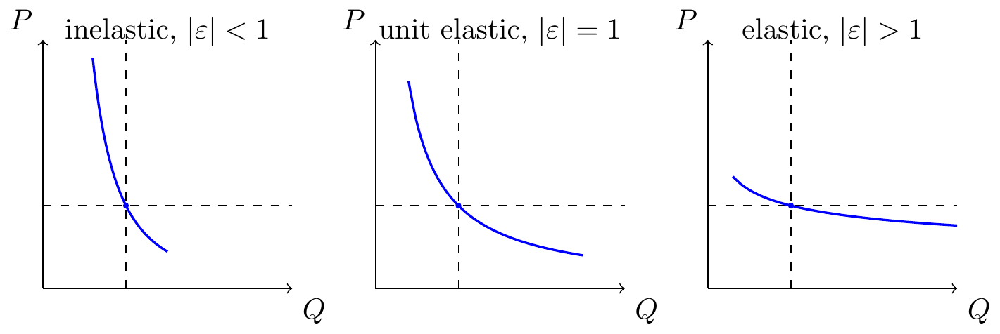

Many thanks to Elsie Jang for discussion.
Summary
- I anticipate that we’re going to be arguing a lot about LLM-speedups & task substitution over the next year.
-
- Suppose an LLM speeds you up by a factor \(\beta\) on tasks that take up share \(s\) of your work (pre-LLM), what’s the overall efficiency gain?
- How does the answer change if you measure the time-share \(s\), after you adjust to use LLMs?
- If we can observe the changes in both (1) per-task productivity impacts, and (2) per-task time-spent, can we back out the overall productivity impact?
- Estimating aggregate productivity increase is hard.
-
The total output gain will be between \(\frac{1}{(1-s)+s/\beta}\) (if perfect complements) and \(\beta\) (if perfect substitutes). These numbers will only be similar only if the time-savings affect most tasks (\(s \simeq 1\)), or the productivity effect is small (\(\beta\simeq 0\)).
If the time-savings are very small then Hulten’s theorem applies. If \(\beta\simeq0\) then \(\Delta\ln y \approx s\ln\beta\), and time saved \(\approx \Delta\ln y\).
If the time-savings are somewhat small then you can use elasticity of substitution. There’s a closed-form expression, given below.
If the time-savings are large then you should use the entire area under the demand curve. If the time-savings are large then it’s no longer reasonable to assume a constant elasticity. However even the demand curve will not be perfect if there are significant income effects. In that case one might need to estimate a more flexible demand system, however I don’t have a good reference here.
Using pre-LLM time-shares will under-estimate productivity improvements; using post-LLM time-shares will over-estimate productivity improvements. This holds strictly if using Amdahl’s law to estimate aggregate productivity improvements, which assumes zero substitability.
We can estimate the aggregate productivity impact if we observe time allocation before and after the change. This holds at least for small changes (where we can assume constant elasticity of substitution). Graphically, if we observe the change in budget constraint, and chagne in consumption point, we can infer substitutability, and therefore aggregate productivity improvement.
- Applications to LLMs.
- Anthropic (2025) sample a range of tasks from Claude logs, and estimate the time-required with and without AI assistance. They estimate a typical speedup of 80%, but that AI is only used for around 25% of tasks, hence the total time-saving is around 20%. However Hulten’s theorem only applies for small efficiency changes, these are large changes (80%), so the conclusion requires assuming Cobb-Douglas substitution, i.e. that time-shares are constant.
Becker et al. (2025) estimate time-savings on tasks using LLMs. In this case the subjects mostly were not using AI, but in followup studies they will be using AI. This makes it hard to think about interpreting uplift studies over time, insofar as AI causes them to change the task distribution. It would be nice to have a good clear language here.
Time savings using ex-ante time shares
| 10% saving on 50% | 50% saving on 10% | 80% saving on 10% | |
|---|---|---|---|
| \(\varepsilon=0\) (perfect complements/Amdahl) | 5.0% | 5.0% | 8.0% |
| \(\varepsilon=1/2\) (complements) | 5.1% | 5.8% | 10.7% |
| \(\varepsilon=1\) (Cobb-Douglas/Hulten) | 5.1% | 6.7% | 14.9% |
| \(\varepsilon\rightarrow\infty\) (perfect substitutes) | 10% | 50% | 80% |
Time savings using ex-post time shares:
| 10% saving on 50% | 50% saving on 10% | 80% saving on 10% | |
|---|---|---|---|
| \(\varepsilon=0\) (perfect complements/Amdahl) | 5.3% | 9.1% | 28.6% |
| \(\varepsilon=1/2\) (complements) | 5.2% | 7.8% | 20.8% |
| \(\varepsilon=1\) (Cobb-Douglas/Hulten) | 5.1% | 6.7% | 14.9% |
| \(\varepsilon\rightarrow\infty\) (perfect substitutes) | N/A | N/A | N/A |
- How these are calculated:
-
- “X% saving” means task-2 productivity increases so that time-per-unit falls by factor \((1-X)\), i.e., \(\beta = 1/(1-X)\). So 10% saving → \(\beta = 1.11\); 50% saving → \(\beta = 2\); 80% saving → \(\beta = 5\).
- “Y% of work” means the time share on task 2 is \(s = Y\).
- Output gain from the CES formula: \[\frac{y'}{y} = \left((1-s_0) + s_0\,\beta^{\varepsilon-1}\right)^{1/(\varepsilon-1)}\] where \(s_0\) is the ex-ante share.
- Time savings = \(1 - (y'/y)^{-1}\), i.e., the fraction of time saved to produce the same output.
- Table 1: The column header specifies the ex-ante share \(s_0\) directly. Compute the output gain and convert to time savings.
- Table 2: The column header specifies the ex-post share \(s_1\). First back out the implied ex-ante share using: \[\frac{s_0}{1-s_0} = \frac{s_1}{1-s_1} \cdot \beta^{1-\varepsilon}\] Then compute the true output gain using \(s_0\).
- Perfect substitutes (Table 2): After any productivity improvement, you reallocate entirely to the better task, so the ex-post share is always 100%. Specifying it as 10% or 50% is inconsistent with optimization—hence N/A.
- “X% saving” means task-2 productivity increases so that time-per-unit falls by factor \((1-X)\), i.e., \(\beta = 1/(1-X)\). So 10% saving → \(\beta = 1.11\); 50% saving → \(\beta = 2\); 80% saving → \(\beta = 5\).
- An analogy: if we can turn lead into gold, what benefit do I get?
-
Using ex ante expenditure: my expenditure share on gold is ~0%, so my benefit is very small.
Using ex post expenditure: if gold is cheap then I’ll start buying gold cutlery. Suppose I spend $1K on gold/year, then it makes it look like I’m getting value worth $100K/year, which is clearly wrong.
I think the resolution is that gold has high substitutability with other goods (steel, bronze), and so demand is highly elastic. But that substitutability only appears when prices are low, so just estimating a CES function I think would get this wrong.
- There are some nice crisp results from economics that apply here.
- I discuss some related literature below.
- Loose ends:
-
- I give bounds on aggregate time-savings with a CES model below, but I’m not sure whether you might not get wider bounds if you relax the CES assumption, e.g. with non-homotheticities so there are income effects.
Model
We set up a two-task CES production problem and derive the optimal time split, the implied output, and the response to productivity changes, with limits for common special cases.
Practical implications (at a glance)
Let \(s\equiv t_2^*\) denote the optimal time share on task 2 (and \(1-s=t_1^*\)). Express all effects as log-changes \(\Delta\ln y^*=\ln\!\big(y^{*'}/y^*\big)\) when task-2 productivity moves from \(A_2\) to \(A_2'=\beta A_2\). The last column plugs in \(s=0.1\) and \(\beta=2\).
| Case | Output effect (\(\Delta\ln y^*\)) | Intuition | Example \(\Delta\ln y^*\) (\(s=0.1,\ \beta=2\)) |
|---|---|---|---|
| General finite change | \(\dfrac{1}{\varepsilon-1}\ln\!\big((1-s)+s\,\beta^{\varepsilon-1}\big)\) | CES-weighted average of the shock | \(\dfrac{1}{\varepsilon-1}\ln\!\big(0.9+0.1\times2^{\varepsilon-1}\big)\) (depends on \(\varepsilon\)) |
| Perfect substitutes (\(\varepsilon\rightarrow\infty\)) | \(\ln \beta\) | All time moves to the better task | \(\approx 0.69\) |
| Cobb–Douglas (\(\varepsilon=1\)) | \(s\,\ln \beta\) | Log-linear weighting by the task share | \(\approx 0.069\) |
| Perfect complements (\(\varepsilon\rightarrow0\)) | \(-\ln\!\big((1-s)+s/\beta\big)\) | Bottlenecked by the slow task | \(\approx 0.051\) |
| Infinitesimal change (Hulten) | \(s\,d\ln A_2\) | Percent gain equals time share on improved task | \(0.1\times\ln 2\approx 0.069\) |
Setup and parameters
- Time endowment is \(1\); choose \(t_1\in[0,1]\) and \(t_2=1-t_1\).
- Productivities: \(A_1>0\) for task \(1\), \(A_2>0\) for task \(2\).
- Taste weight: \(\alpha\in(0,1)\) on task \(1\).
- Substitution parameter: \(\varepsilon>0\); take \(\varepsilon\neq1\) for the algebra and then send \(\varepsilon\rightarrow1\) for the Cobb–Douglas limit.
- Output aggregator (CES): \[y(t_1,t_2)=\left(\alpha(A_1 t_1)^{\frac{\varepsilon-1}{\varepsilon}}+(1-\alpha)(A_2 t_2)^{\frac{\varepsilon-1}{\varepsilon}}\right)^{\frac{\varepsilon}{\varepsilon-1}}.\]
Assumptions
- Feasible set: \(t_1\in[0,1]\), \(t_2=1-t_1\).
- Parameters satisfy \(A_i>0\) and \(\alpha\in(0,1)\).
- Decision problem: choose \(t_1\) to maximise \(y(t_1,1-t_1)\).
Proposition 1 (optimal time split). The interior optimum is \[t_1^*=\frac{1}{1+\left(\frac{1-\alpha}{\alpha}\right)^{\varepsilon}\left(\frac{A_2}{A_1}\right)^{\varepsilon-1}},\qquad t_2^*=1-t_1^*.\]
Proof (explicit)
- Write the Lagrangian \(\mathcal{L}=y(t_1,t_2)+\lambda(1-t_1-t_2)\) with \(y\) as above.
- First-order conditions (interior): \(\partial\mathcal{L}/\partial t_1=0\) and \(\partial\mathcal{L}/\partial t_2=0\) give \[\lambda=\alpha\,A_1^{\frac{\varepsilon-1}{\varepsilon}}\,t_1^{-\frac{1}{\varepsilon}}\,y^{\frac{1}{\varepsilon}}=(1-\alpha)\,A_2^{\frac{\varepsilon-1}{\varepsilon}}\,t_2^{-\frac{1}{\varepsilon}}\,y^{\frac{1}{\varepsilon}}.\]
- Cancel \(y^{\frac{1}{\varepsilon}}\) and rearrange to obtain \(\frac{t_2}{t_1}=\left(\frac{1-\alpha}{\alpha}\right)^{\varepsilon}\left(\frac{A_2}{A_1}\right)^{\varepsilon-1}\).
- Impose \(t_1+t_2=1\) and solve for \(t_1^*\); set \(t_2^*=1-t_1^*\).
- The interior solution is valid for \(\varepsilon>0\) with finite \(A_i\); only the perfect-substitutes limit \(\varepsilon\rightarrow\infty\) or \(A_i\rightarrow0\) forces a corner.
Proposition 2 (indirect output). At \(t_1^*,t_2^*\) the output is \[y^*=\Big(\alpha^{\varepsilon}A_1^{\varepsilon-1}+(1-\alpha)^{\varepsilon}A_2^{\varepsilon-1}\Big)^{\frac{1}{\varepsilon-1}}.\]
Proof (explicit)
- Substitute \(t_1^*,t_2^*\) from Proposition 1 into \(y(t_1,t_2)\).
- Factor out \(\alpha^{\varepsilon}A_1^{\varepsilon-1}+(1-\alpha)^{\varepsilon}A_2^{\varepsilon-1}\) inside the braces; the exponent \(\frac{\varepsilon}{\varepsilon-1}\) collapses to the stated form.
Proposition 3 (infinitesimal productivity change). Holding \(A_1\) fixed, a small change in \(A_2\) satisfies \[\frac{dy^*}{y^*}=t_2^*\,\frac{dA_2}{A_2}.\]
Proof (explicit)
- Take \(\log y^*=\frac{1}{\varepsilon-1}\log\big(\alpha^{\varepsilon}A_1^{\varepsilon-1}+(1-\alpha)^{\varepsilon}A_2^{\varepsilon-1}\big)\).
- Differentiate with respect to \(\log A_2\): \[\frac{dy^*}{y^*}=\frac{(1-\alpha)^{\varepsilon}A_2^{\varepsilon-1}}{\alpha^{\varepsilon}A_1^{\varepsilon-1}+(1-\alpha)^{\varepsilon}A_2^{\varepsilon-1}}\cdot\frac{dA_2}{A_2}.\]
- The fraction equals \(t_2^*\) from Proposition 1, so the result follows.
Proposition 4 (finite productivity change on task 2). If \(A_2'=\beta A_2\) with \(\beta>0\), then \[\frac{y^{*'}}{y^*}=\left(t_1^*+(1-t_1^*)\beta^{\varepsilon-1}\right)^{\frac{1}{\varepsilon-1}}.\]
Proof (explicit)
- Replace \(A_2\) by \(\beta A_2\) in \(y^*\) from Proposition 2: \[y^{*'}=\Big(\alpha^{\varepsilon}A_1^{\varepsilon-1}+(1-\alpha)^{\varepsilon}(\beta A_2)^{\varepsilon-1}\Big)^{\frac{1}{\varepsilon-1}}.\]
- Factor out the old level \(y^*\) to form a ratio; the remaining weights inside the braces are \(t_1^*\) and \(t_2^*=1-t_1^*\), giving the stated expression.
Proposition 5 (canonical limits). Take limits of Proposition 4:
- Cobb–Douglas (\(\varepsilon\rightarrow1\)): \(\frac{y^{*'}}{y^*}\rightarrow \beta^{1-\alpha}\) and \(t_i^*\) is unchanged.
- Perfect complements (\(\varepsilon\rightarrow0\)): \(\frac{y^{*'}}{y^*}\rightarrow \frac{1}{t_1^*+t_2^*/\beta}\).
- Perfect substitutes (\(\varepsilon\rightarrow\infty\)): \(\frac{y^{*'}}{y^*}\rightarrow \beta\) with \(t_2^*\rightarrow1\) if \(\beta A_2>A_1\).
Proof sketch For \(\varepsilon\rightarrow1\) apply L’Hôpital to the CES form. For \(\varepsilon\rightarrow0\) the CES aggregator converges to \(\min\{A_1 t_1,A_2 t_2\}\). For \(\varepsilon\rightarrow\infty\) it converges to \(\max\{A_1 t_1,A_2 t_2\}\). Substitute these limits into Proposition 4 and simplify.
Illustrations
Indifference Curve
Demand Curve

References
Acemoglu, Daron, and David Autor. 2011. “Skills, Tasks and Technologies: Implications for Employment and Earnings.” In, edited by David Card and Orley Ashenfelter, 4:1043–1171. Handbook of Labor Economics. Elsevier. https://doi.org/https://doi.org/10.1016/S0169-7218(11)02410-5.
Anthropic. 2025. “Estimating AI Productivity Gains from Claude Conversations.” 2025. https://www.anthropic.com/research/estimating-productivity-gains.
Autor, David, Frank Levy, and Richard J Murnane. 2003. “The Skill Content of Recent Technological Change: An Empirical Exploration.” The Quarterly Journal of Economics 118 (4): 1279–1333. https://doi.org/10.3386/w8337.
Baqaee, David Rezza, and Ariel Burstein. 2021. “Welfare and Output with Income Effects and Demand Instability.” Working Paper. https://www.semanticscholar.org/search?q=Welfare%20and%20Output%20with%20Income%20Effects%20and%20Demand%20Instability.
Baqaee, David Rezza, and Emmanuel Farhi. 2019. “The Macroeconomic Impact of Microeconomic Shocks: Beyond Hulten’s Theorem.” Econometrica 87 (4): 1155–1206. https://doi.org/10.3982/ecta15202.
Becker, Joel, Nate Rush, Elizabeth Barnes, and David Rein. 2025. “Measuring the Impact of Early-2025 AI on Experienced Open-Source Developer Productivity.” https://arxiv.org/pdf/2507.09089.pdf.
Caves, Douglas W., Laurits R. Christensen, and W. Erwin Diewert. 1982. “The Economic Theory of Index Numbers and the Measurement of Input, Output, and Productivity.” Econometrica 50 (6): 1393–1414. https://www.jstor.org/stable/1913382.
Comin, Diego, Danial Lashkari, and Martı́n Mestieri. 2021. “Structural Change with Long-Run Income and Price Effects.” Working Paper. https://doi.org/10.3982/ecta16317.
Deaton, Angus, and John Muellbauer. 1980. “An Almost Ideal Demand System.” American Economic Review 70 (3): 312–26. https://www.semanticscholar.org/search?q=An%20Almost%20Ideal%20Demand%20System.
DeSerpa, Allan C. 1971. “A Theory of the Economics of Time.” The Economic Journal 81 (324): 828–46. https://doi.org/10.2307/2230320.
Hausman, Jerry A. 1981. “Exact Consumer’s Surplus and Deadweight Loss.” American Economic Review 71 (4): 662–76. https://www.semanticscholar.org/search?q=Exact%20Consumer%27s%20Surplus%20and%20Deadweight%20Loss.
Hulten, Charles R. 1978. “Growth Accounting with Intermediate Inputs.” The Review of Economic Studies 45 (3): 511–18. https://doi.org/10.2307/2297252.
Willig, Robert D. 1976. “Consumer’s Surplus Without Apology.” American Economic Review 66 (4): 589–97. https://www.semanticscholar.org/paper/745fa39279d59c6f6b14dce4a38bcf098774c2ad.